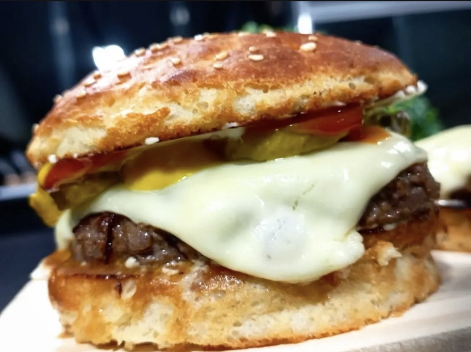
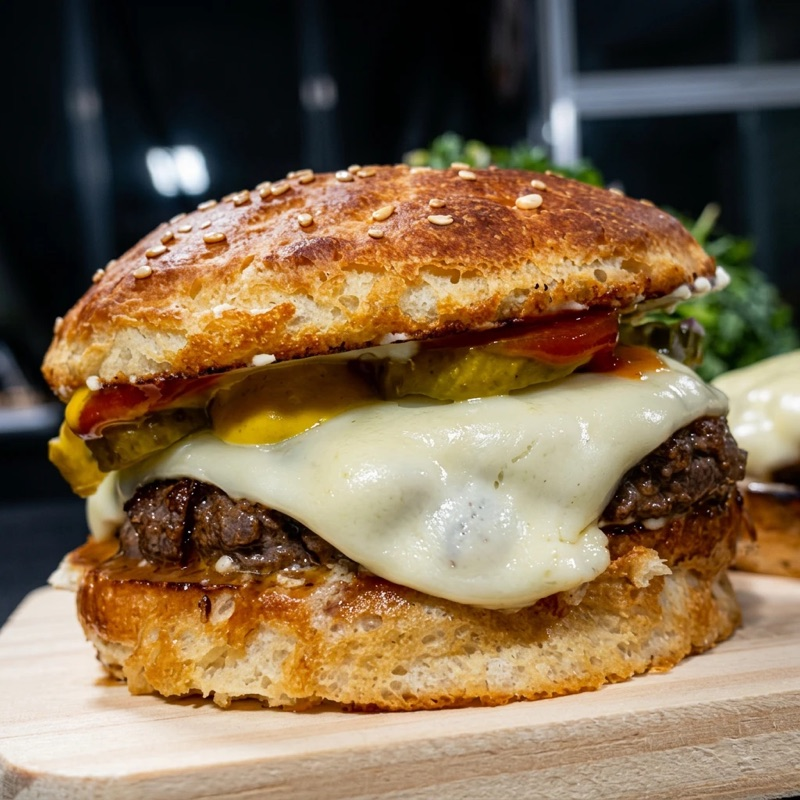
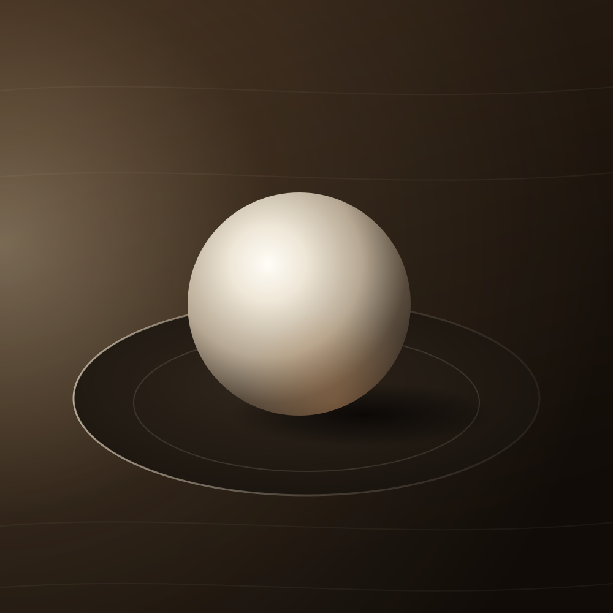

Arruma
- A luzSuave, como de janela, vindo da esquerda, com sombra leve.
- A corNatural, sem brilho de plástico e sem exagero.
- A nitidezO foco no produto.
- O fundoLimpo e um pouco desfocado, numa bancada escura.
- A sujeiraA migalha e o que sobra em volta.
Foto pronta pro cardápio
Você manda a foto do celular. Ela volta com a luz, o fundo e o enquadramento de cardápio. Sem inventar ingrediente.
A foto de celular do seu produto, com a luz, o fundo e o enquadramento de cardápio. Sem inventar ingrediente. Esta ferramenta ainda não abriu.
Ou mande: “Quero as 3 fichas técnicas grátis 🍍”
Esta ferramenta abre em breve. Enquanto isso, comece pelas 3 fichas técnicas grátis do Pine Cost Pro.
Ver o Pine Cost ProAntes e depoisToque na foto


Toque na foto pra ver o antes e o depois.
4 exemplos reais · deslize a foto pro lado
A luz, ao vivo
Foto nenhuma mostra isso: a mesma esfera, com a luz vindo de cada lado. Arraste a janela. A da esquerda, suave, é a que a gente pede pra IA.
Depois, ponha a foto do seu produto: as guias mostram o que a gente olha nela.
Estudo de luzArraste a janela

Arraste a janela em volta da esfera: a luz, o brilho e a sombra vão junto.
A luz da sua foto, medida aqui
É só uma medida feita no seu aparelho, não é a IA. Quem arruma a luz é a IA, no Direct.
As guias do que a gente olha
A foto não sai do seu aparelho. Ela abre só aqui, no navegador, e some quando você fecha a página.
Onde ela aparece
A foto sai quadrada, em 1080 × 1080. Deslize o celular e veja a mesma foto em cada lugar.
Na lista, a foto divide a tela com o nome e o preço. Pequena assim, a luz e o fundo limpo fazem a diferença.
O app e o Instagram aqui são de mentira. A foto é de verdade: o exemplo real escolhido lá em cima, até você pôr a sua.Só a sua foto é de verdade.
A marca no canto
Arraste a linha por cima da marca: é a mesma foto dos dois lados.
A mesma foto dos dois lados: à esquerda, no pacote; à direita, a amostra grátis.
Exemplo real Uma foto revitalizada no lugar da sua.
Sem inventar ingrediente
É sempre o seu produto de verdade, revitalizado.
Arruma
Não toca
E outra IA confere. Ela compara a foto nova com a sua. Se o produto mudou, a foto é refeita.
O que vem
Serve no app de delivery, no cardápio e no feed.
As primeiras vão com a marca da Pineapple no canto. No pacote, sem a marca.
Você manda a foto no Direct e ela volta ali, em uns minutos.
Como funciona
Do celular, do jeito que tiver.
E diz qual é o produto.
A mesma comida, com a luz certa.
Perguntas
Não. Ela mexe só na luz, na cor, na nitidez e no fundo. Outra IA confere se é o mesmo produto, e se mudou, a foto é refeita.
Não. Ela abre só no seu navegador, não é enviada pra ninguém e some quando você fecha a página. A foto de verdade você manda no Direct.
A sua, não. Quando você põe a sua foto aqui, ela aparece do jeito que está hoje, no app e no Instagram, com o que a gente olha nela. A foto revitalizada sai no Direct. A luz que você arrasta é um estudo, numa esfera de gesso. Já os 4 exemplos do começo da página são fotos revitalizadas de verdade, cada uma com a foto de antes.
Se ela estiver escura ou cortada, e não der pra arrumar sem mudar o produto, a gente pede outra: de dia, perto da janela, com ele inteiro aparecendo.
Pode. Ela sai quadrada, em 1080 × 1080. Na grade do perfil, o Instagram mostra o meio dela.
Esta ferramenta abre em breve. Enquanto isso, as 3 fichas técnicas grátis do Pine Cost Pro já estão abertas.
Você vê como ficam 3 fotos suas e decide depois.
Ou mande: “Quero as 3 fichas técnicas grátis 🍍”